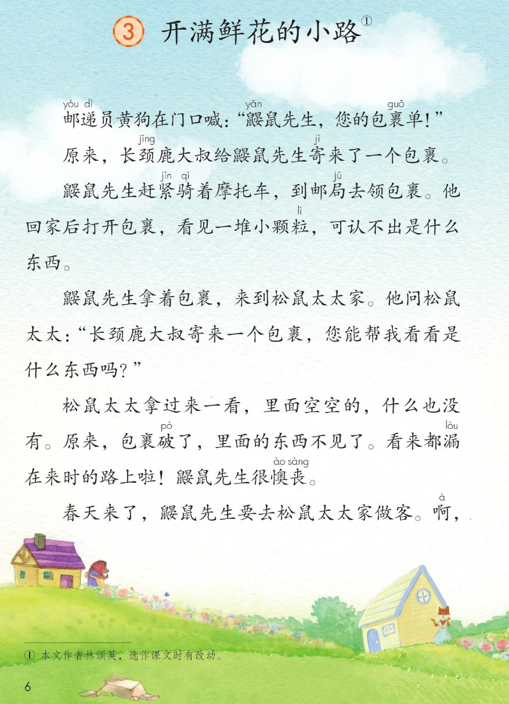
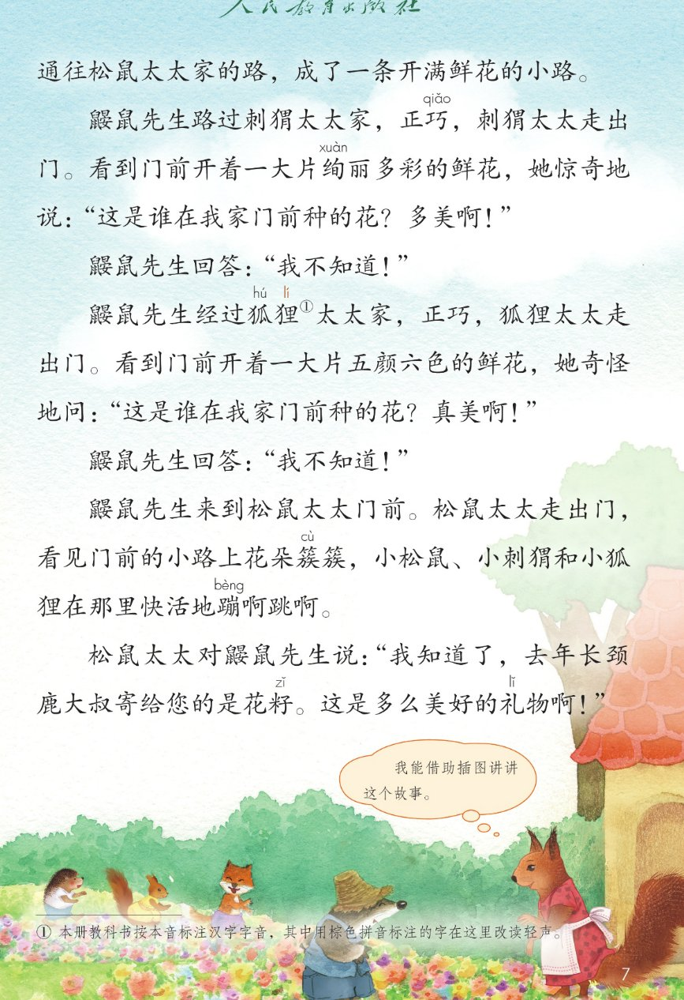
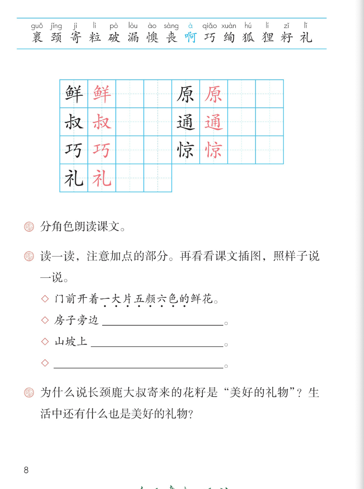

×
🔊 手机听不到声音怎么办？
① 先把手机
媒体音量调大 ，确认没开静音、没连蓝牙耳机；在微信里打开的，点右上角「⋯ → 用浏览器打开」。
② 还是没声音？到应用商店免费下载
Microsoft Edge 浏览器 （它自带朗读发声），用它打开本页面就能出声。
③ 换了 Edge 仍然没声音，说明这部手机的
硬件/系统不支持 网页朗读（多为老旧机型）；近几年买的新手机一般都能正常播放。
→ 打开声音自检
🌸 第 3 课《开满鲜花的小路》· 有声图文带读
统编版语文 · 第一单元·阅读 · 课本 第 6~8 页 · 作者：林颂英（选作课文时有改动）
课文 12 段 · 21 句
会认字 15
会写字 7
听写词 10
近义词 4 组
深入理解 8 题
本课本领 分角色朗读·看图讲故事·照样子说
🎧 五步学（可随时点任意一句、一个字、一个词单独听）： ① 听读课文 ——12 个自然段、21 句，一句一句读，读到哪一句哪一句发光；开「跟读」后读完一句留时间让你自己读。② 学字词 ——15 个会认字、7 个会写字（含书写提示），点一个读一个。③ 词语·听写·造句 ——先读课本第 8 页三道课后题（含加点部分和照样子说一说），再听写 10 个词（读两遍→你写→报答案→听示范句），最后听 4 组近义词辨析。④ 深入理解 ——8 道题（认知 / 理解 / 运用 / 拓展），开放题答案不唯一，先想后看。⑤ 讲故事·分角色 ——借助课本插图按先、再、接着、最后讲这个故事，再按课文里的真人物分角色朗读。
📚 本册第一单元·阅读（照课本目录）： 1 古诗二首 → 2 找春天 → 3 开满鲜花的小路（本课） 前后连起来看：诗里的春天 → 出门找春天 → 春天里的一路鲜花 → 亲手种下春天
📖 课文出处（课本第 6 页脚注照录） ：① 本文作者林颂英，选作课文时有改动。
📖 读音提示（课本第 7 页脚注照录） ：① 本册教科书按本音标注汉字字音，其中用棕色拼音标注的字在这里改读轻声。本课「狐狸」的「狸」在课文里读轻声，要读得又轻又短；生字表上标的是它的本音。
点段前的 ①~⑫ 听整段
🔁 跟读模式：关
👁 隐藏注音（自测用）
注音只标本课要认、要写的字，以及课本随文标了音的字；读音照课本第 6~8 页
🎤 朗读要求 · 分角色朗读（课后题①的老师标准） 读准字音 ：懊丧、绚丽多彩、花籽、正巧跟着课本第 6~8 页的注音读；「狐狸」的「狸」读轻声（见第 7 页脚注），「啊」在课文里表示吃惊；不添字、不漏字 ：逗号停得短，句号停得长，一句一句读清楚；人物的话各有语气 ：黄狗是喊 ，鼹鼠先生是请教 和老实回答，刺猬太太又惊又喜 ，狐狸太太奇怪 ，松鼠太太恍然大悟 ；问句上扬、感叹句读出惊喜 ：「这是谁在我家门前种的花？」「多美啊！」「真美啊！」「这是多么美好的礼物啊！」；旁白要稳 ：分角色时旁白把故事连起来，读得清楚、不抢人物的话。
①
邮yóu 递dì 员黄狗在门口喊：“鼹yǎn 鼠先生，您的包裹guǒ 单！”
②
原yuán 来，长颈jǐng 鹿大叔shū 给鼹鼠先生寄jì 来了一个包裹。
③
鼹鼠先生赶紧jǐn 骑qí 着摩托车，到邮局jú 去领包裹。
他回家后打开包裹，看见一堆小颗粒lì ，可认不出是什么东西。
④
鼹yǎn 鼠先生拿着包裹，来到松鼠太太家。他问松鼠太太：“长颈鹿大叔寄来一个包裹，您能帮我看看是什么东西吗？”
⑤
松鼠太太拿过来一看，里面空空的，什么也没有。
原来，包裹破pò 了，里面的东西不见了。
看来都漏lòu 在来时的路上啦！
鼹鼠先生很懊ào 丧sàng 。
⑥
春天来了，鼹鼠先生要去松鼠太太家做客。
啊à ，通tōng 往松鼠太太家的路，成了一条开满鲜xiān 花的小路。
⑦
鼹yǎn 鼠先生路过刺猬太太家，正巧qiǎo ，刺猬太太走出门。看到门前开着一大片绚xuàn 丽多彩的鲜花，她惊jīng 奇地说：“这是谁在我家门前种的花？多美啊！”
⑧
鼹鼠先生回答：“我不知道！”
⑨
鼹鼠先生经过狐hú 狸lí 太太家，正巧，狐狸太太走出门。
看到门前开着一大片五颜六色的鲜花，她奇怪地问：“这是谁在我家门前种的花？真美啊！”
⑩
鼹鼠先生回答：“我不知道！”
⑪
鼹鼠先生来到松鼠太太门前。
松鼠太太走出门，看见门前的小路上花朵簇cù 簇，小松鼠、小刺猬和小狐狸在那里快活地蹦bèng 啊跳啊。
⑫
松鼠太太对鼹鼠先生说：“我知道了，去年长颈鹿大叔寄给您的是花籽zǐ 。这是多么美好的礼lǐ 物啊！”
🤔 想一想（点我可跳过）
点一张图，听读整页

第 6 页 · 课题与课文前半

第 7 页 · 开满鲜花的小路与故事结尾

第 8 页 · 生字表与课后题
📖 人教版《语文》二年级下册 · 课本第 6~8 页 · 图片仅供个人学习，版权归人民教育出版社所有
点一个字，听读音、词语和课文里的句子；「邮」「递」「鼹」「紧」「骑」「局」「簇」「蹦」是课本随文注音的字，不在生字表里
结构、部首、笔画与书写提示为通用规范，供参考，以教材和老师的指导为准
鲜
xiān
鲜花 · 新鲜
14 画 · 左右（鱼）
左鱼右羊都写窄，两边一样高
原
yuán
原来 · 草原
10 画 · 半包围（厂）
厂字头写舒展，里面白小要写紧凑
叔
shū
大叔 · 叔叔
8 画 · 左右（又）
左上小下大，右边又字捺要舒展
通
tōng
通往 · 通过
10 画 · 半包围（辶）
走之底最后写，平捺要托住里面
巧
qiǎo
正巧 · 巧手
5 画 · 左右（工）
左工写窄，右边竖折折钩一笔写成
惊
jīng
惊奇 · 惊喜
11 画 · 左右（忄）
竖心旁先两点后竖，右边京字写正
礼
lǐ
礼物 · 礼貌
5 画 · 左右（礻）
示字旁四笔别多写一点，竖弯钩舒展
点一行，听题目、例句和怎么说更好
📖 课后题（课本第 8 页照录） ：① 分角色朗读课文。 ② 读一读，注意加点的部分。再看看课文插图，照样子说一说。◇ 门前开着一大片五颜六色的 鲜花。 ◇ 房子旁边＿＿＿＿＿。 ◇ 山坡上＿＿＿＿＿。
课后题 ① 分角色朗读课文。
课后题 ② 读一读，注意加点的部分。再看看课文插图，照样子说一说。
例句 ◇ 门前开着一大片五颜六色的 鲜花。
照样子 1 ◇ 房子旁边
照样子 2 ◇ 山坡上
课后题 ③ 为什么说长颈鹿大叔寄来的花籽是“美好的礼物”？生活中还有什么也是美好的礼物？
读两遍 → 你在纸上写 → 报答案 → 听示范句
准备听写 · 共 10 个词
○ ○ ○
点下面的「开始听写」，听到一个词就写一个词。
▶ 开始听写
🔁 再读一遍
👁 看答案
点词听读，点句子听示范句，再自己说一句
1 鲜花 会写字 · 鲜
示范句：门前开着一大片五颜六色的鲜花。
✏️ 我也能说：哪里 + 开着 + 什么样的鲜花
2 原来 会写字 · 原
示范句：原来，包裹破了，里面的东西不见了。
✏️ 我也能说：原来，+ 明白了什么
3 大叔 会写字 · 叔
示范句：长颈鹿大叔给鼹鼠先生寄来了一个包裹。
✏️ 我也能说：谁 + 给谁 + 寄来了什么
4 通往 会写字 · 通
示范句：通往松鼠太太家的路，成了一条开满鲜花的小路。
✏️ 我也能说：通往哪里 + 的路上有什么
5 正巧 会写字 · 巧
示范句：鼹鼠先生路过刺猬太太家，正巧，刺猬太太走出门。
✏️ 我也能说：谁 + 正巧 + 碰上什么
6 惊奇 会写字 · 惊
示范句：她惊奇地说，多美啊！
✏️ 我也能说：谁 + 惊奇地 + 说了什么
7 礼物 会写字 · 礼
示范句：这是多么美好的礼物啊！
✏️ 我也能说：什么 + 是美好的礼物
8 包裹 课文里的词
示范句：邮递员黄狗在门口喊，鼹鼠先生，您的包裹单！
✏️ 我也能说：谁 + 收到了一个包裹
9 懊丧 课文里的词
示范句：鼹鼠先生很懊丧。
✏️ 我也能说：谁 + 为什么 + 很懊丧
10 花籽 课文里的词
示范句：去年长颈鹿大叔寄给您的是花籽。
✏️ 我也能说：花籽 + 后来变成了什么
相同点 / 不一样在哪 / 各造一句
惊奇 — 奇怪
相同：都写没想到、觉得意外 。
不一样：惊奇 偏又惊又喜，课文里刺猬太太看到一大片绚丽多彩的鲜花，惊奇地说「多美啊」；奇怪 偏不明白、想问清楚，狐狸太太奇怪地问「这是谁在我家门前种的花」。
惊奇：她惊奇地说，多美啊！
绚丽多彩 — 五颜六色
相同：都写颜色多、很好看 。
不一样：绚丽多彩 强调光彩耀眼、鲜亮；五颜六色 强调颜色种类多。课文分别用在刺猬太太和狐狸太太门前，写的是同一路花，换了说法就不重复。
绚丽多彩：一大片绚丽多彩的鲜花。
赶紧 — 连忙
相同：都写动作快、不耽搁 。
不一样：赶紧 是抓紧时间自己去做一件事，课文说鼹鼠先生赶紧骑着摩托车去领包裹；连忙 多是听到、看到之后马上接着做，常用来回应别人。
赶紧：赶紧骑着摩托车去领包裹。
懊丧 — 难过
相同：都写心里不高兴 。
不一样：懊丧 还带着「白忙一场、有点后悔、提不起劲」的意思，课文里包裹空了、东西全漏了，鼹鼠先生很懊丧；难过 只说伤心，不一定有后悔。
懊丧：鼹鼠先生很懊丧。
一大片……的 一大片绚丽多彩的 鲜花 一大片五颜六色的 鲜花
写花的样子 绚丽多彩 五颜六色 花朵簇簇 开满鲜花
语气词「啊」 啊，成了一条开满鲜花的小路 多美啊！ 真美啊！ 这是多么美好的礼物啊！
照样子说一处 门前开着一大片五颜六色的鲜花 房子旁边…… 山坡上……
标「答案不唯一」的题，说得有道理都对
认知 谁给鼹鼠先生寄来了包裹？包裹里原来是什么？后来为什么不见了？看解析
🤔 想一想
解析：
长颈鹿大叔寄来一个包裹，鼹鼠先生领回一堆认不出的小颗粒。
包裹破了，看来都漏在来时的路上啦，鼹鼠先生很懊丧。
松鼠太太最后才说出，寄给您的是花籽。
认知 一路上哪几位太太门前开了鲜花？她们分别说了什么？看解析
🤔 想一想
解析：
刺猬太太家、狐狸太太家、松鼠太太门前。
两句都问是谁种的花，一句说多美啊，一句说真美啊。
她不光看花，还揭开了谜底。
理解 鼹鼠先生为什么「很懊丧」？后来那条小路为什么「开满鲜花」？看解析
🤔 想一想
解析：
包裹空了、东西不见了，所以又失望又没劲。
漏掉的是花籽，春天一到就变成一路鲜花。
当时最懊丧的事，后来成了最美好的事。
理解 课后题③：为什么说长颈鹿大叔寄来的花籽是「美好的礼物」？看解析
🤔 想一想
解析：
不是鼹鼠先生一个人，是三家太太和一群小动物。
一堆小颗粒，变成了一条开满鲜花的小路。
松鼠太太说，这是多么美好的礼物啊。
理解 刺猬太太「惊奇地说」、狐狸太太「奇怪地问」，这两个词能不能换一换？看解析
🤔 想一想
解析：
一个赞叹多美啊，一个追问是谁种的。
惊奇偏惊喜，奇怪偏纳闷。
两次经过写得不重复，故事更有节奏。
运用 课后题②：看看课文插图，照「门前开着一大片五颜六色的鲜花」的样子说一说。看解析
🤔 想一想
解析：
房子旁边、山坡上，或者自己再想一处。
有多少，是什么样的，正好是课文加点的部分。
说的景物在插图上找得到吗。
🌈 答案不唯一，说得有道理都对
运用 课后题①：分角色朗读课文，怎样读好每个人说的话？看解析
🤔 想一想
解析：
黄狗、鼹鼠先生、三位太太，还有旁白。
喊、请教、惊奇、奇怪、我知道了、啊。
问句轻轻上扬，感叹句读出惊喜。
🌈 答案不唯一，说得有道理都对
拓展 课后题③后半：生活中还有什么也是「美好的礼物」？你想送给谁？看解析
🤔 想一想
解析：
美好的礼物是让别人也高兴，不只自己高兴。
你做过、收到过什么样的心意。
为什么它也美好，理由比答案更重要。
🌈 答案不唯一，说得有道理都对
点一步，听这一步
1
先 · 包裹单来了
2
再 · 领回小颗粒
3
接着 · 花籽漏在路上
4
然后 · 一路开满鲜花
5
最后 · 最美好的礼物
💬 课本第 7 页泡泡照录 ：我能借助插图讲讲这个故事。先 说包裹单来了 → 再 说领回一堆认不出的小颗粒 → 接着 说包裹破了、花籽漏在路上，鼹鼠先生很懊丧 → 然后 说春天来了，一路开满鲜花 → 最后 说松鼠太太揭晓：花籽是最美好的礼物。
点一张卡，听这个角色读的那几句
📮 旁白·包裹单
邮递员黄狗在门口喊，鼹鼠先生，您的包裹单！原来，长颈鹿大叔给鼹鼠先生寄来了一个包裹。
💬 黄狗是喊 ，旁白读得平稳
📦 旁白·领包裹
鼹鼠先生赶紧骑着摩托车，到邮局去领包裹。他回家后打开包裹，看见一堆小颗粒，可认不出是什么东西。
💬 三个动作连着读 ，读出急着想知道
🐹 鼹鼠先生·请教
鼹鼠先生拿着包裹，来到松鼠太太家。“长颈鹿大叔寄来一个包裹，您能帮我看看是什么东西吗？”
💬 请教要有礼貌 ，句尾轻轻上扬
😔 旁白·包裹破了
原来，包裹破了，里面的东西不见了。看来都漏在来时的路上啦！鼹鼠先生很懊丧。
💬 最后一句慢一点、低一点 ，读出懊丧
🌱 旁白·春天来了
春天来了，鼹鼠先生要去松鼠太太家做客。啊，通往松鼠太太家的路，成了一条开满鲜花的小路。
💬 啊 稍稍拖长，后半句一下子亮起来
🦔 刺猬太太·惊奇
鼹鼠先生路过刺猬太太家，正巧，刺猬太太走出门。“这是谁在我家门前种的花？多美啊！”
💬 又惊又喜 ，多美啊要读得亮
🐹 鼹鼠先生·第一次回答
“我不知道！”
💬 读得干脆、老实 ，不要拖
🦊 狐狸太太·奇怪
鼹鼠先生经过狐狸太太家，正巧，狐狸太太走出门。“这是谁在我家门前种的花？真美啊！”
💬 先纳闷 再赞叹，狸读轻声
🐹 鼹鼠先生·第二次回答
“我不知道！”
💬 和第一次一样老实，可以稍快
🐿️ 松鼠太太·揭晓礼物
松鼠太太走出门，看见门前的小路上花朵簇簇，小松鼠、小刺猬和小狐狸在那里快活地蹦啊跳啊。“我知道了，去年长颈鹿大叔寄给您的是花籽。这是多么美好的礼物啊！”
💬 恍然大悟 ，最后一句读得慢、读得暖